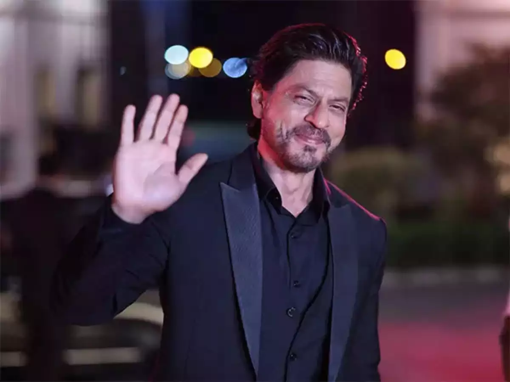
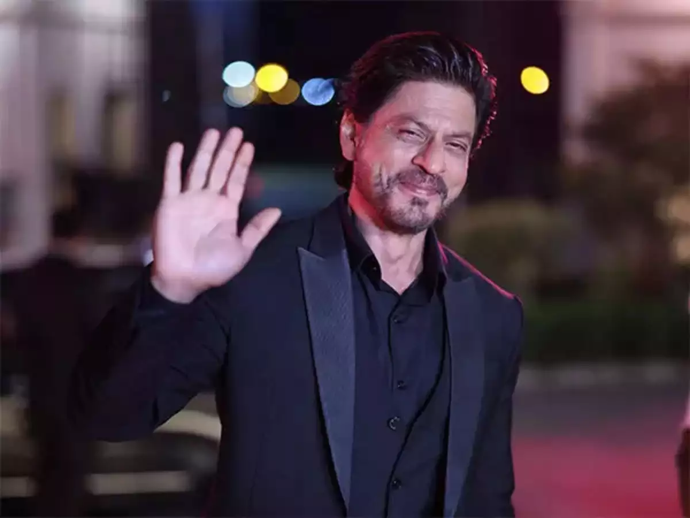

Shah Rukh Khan (born 2 November 1965), also known by the initialism SRK, is an Indian actor and film producer who works in Hindi films. Referred to in the media as the "Baadshah of Bollywood" and "King Khan", he has appeared in more than 90 films, and earned numerous accolades, including 14 Filmfare Awards. He has been awarded the Padma Shri by the Government of India, as well as the Ordre des Arts et des Lettres and Legion of Honour by the Government of France. Khan has a significant following in Asia and the Indian diaspora worldwide. In terms of audience size and income, he has been described as one of the most successful film stars in the world. Many of his films thematise Indian national identity and connections with diaspora communities, or gender, racial, social and religious differences and grievances. Khan began his career with appearances in several television series in the late 1980s, and made his Bollywood debut in 1992 with Deewana. He was initially recognised for playing villainous roles in the films Baazigar (1993) and Darr (1993). Khan established himself by starring in a series of top-grossing romantic films, including Dilwale Dulhania Le Jayenge (1995), Dil To Pagal Hai (1997), Kuch Kuch Hota Hai (1998), Mohabbatein (2000), Kabhi Khushi Kabhie Gham... (2001), Kal Ho Naa Ho (2003), Veer-Zaara (2004) and Kabhi Alvida Naa Kehna (2006). He earned critical acclaim for his portrayal of an alcoholic in Devdas (2002), a NASA scientist in Swades (2004), a hockey coach in Chak De! India (2007) and a man with Asperger syndrome in My Name Is Khan (2010). Further commercial successes came with the romantic dramas Om Shanti Om (2007) and Rab Ne Bana Di Jodi (2008), and with his expansion to comedies in Chennai Express (2013) and Happy New Year (2014). Following a brief setback and hiatus, Khan made a career comeback with the action film Pathaan (2023), which became the second-highest-grossing Hindi release. As of 2015, Khan is co-chairman of the motion picture production company Red Chillies Entertainment and its subsidiaries, and is the co-owner of the Indian Premier League cricket team Kolkata Knight Riders and the Caribbean Premier League team Trinbago Knight Riders. The media often label him as "Brand SRK" because of his many endorsement and entrepreneurship ventures. He is a frequent television presenter and stage show performer. Khan's philanthropic endeavours have provided health care and disaster relief, and he was honoured with UNESCO's Pyramide con Marni award in 2011 for his support of children's education and the World Economic Forum's Crystal Award in 2018 for advocating for women's and children's rights in India. He regularly features in listings of the most influential people in Indian culture, and in 2008, Newsweek named him one of their fifty most powerful people in the world. In 2022, Khan was voted one of the 50 greatest actors of all time in a readers' poll by Empire, and in 2023, Time magazine named him one of the 100 most influential people in the world. Early life and family Parents Shah Rukh Khan's father, Mir Taj Mohammed Khan, was an Indian independence activist from Peshawar who campaigned alongside the Khudai Khidmatgar, a nonviolent resistance movement led by Abdul Ghaffar Khan that sought a united and independent India.[1][2] Mir was a follower of Abdul Ghaffar Khan,[3] and affiliated with the Indian National Congress.[4] He was also the cousin of the major general in the Indian National Army Shah Nawaz Khan.[a] According to Khan his paternal grandfather, Mir Jan Muhammad Khan, was an ethnic Pashtun (Pathan) from Afghanistan.[7][4][8] However, his paternal cousins in Peshawar later clarified that the family speaks Hindko and is originally from Kashmir, from where they settled in Peshawar centuries back, contradicting the claim that his grandfather was a Pashtun from Afghanistan.[4][9] As of 2010, Khan's paternal family was still living in the Shah Wali Qataal area of Peshawar's Qissa Khwani Bazaar.[4]